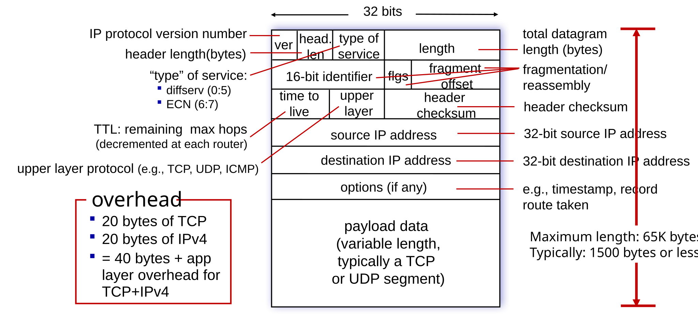

Internet Protocol v4 (IPv4)
Monday, March 9, 2026
Lesson Objectives
- Understand IPv4 datagram structure and header fields.
- Describe IPv4 addressing: classes, subnetting, and CIDR notation.
- Explain how DHCP assigns IP addresses dynamically.
- Calculate subnet masks, number of hosts, network/broadcast addresses.
Preparation
- \(4.3.1\) IPv4 Datagram Format
- \(4.3.2\) IPv4 Addressing
Network Layer Header
IPv4 Datagram Structure

Addressing
What is an IP Address?
- A 32-bit number that uniquely identifies each host interface on a network.
- Written in dotted-decimal notation, e.g.
192.168.100.200 - Logical address - it can change!
- Assigned by network administrators or dynamically via DHCP.
- Can you assign it yourself?
What is an interface?
- 🔌 Connection point between a host and a physical link.
- 🛣️ What about a router?
- 🖥️ Is a router also a host?
- 🔁 Can a host have multiple interfaces?
- 💻📶 How many actual physical interfaces does your laptop have?
Reading IPv4 Addresses
Each octet represents 8 bits (1 byte) of the address, ranging from 0 to 255 (\(2^8 - 1\))
199.239.136.245
_ _ _ _ _ _ _ _ . _ _ _ _ _ _ _ _ . _ _ _ _ _ _ _ _ . _ _ _ _ _ _ _ _
192.168.100.1
_ _ _ _ _ _ _ _ . _ _ _ _ _ _ _ _ . _ _ _ _ _ _ _ _ . _ _ _ _ _ _ _ _
172.16.254.255
_ _ _ _ _ _ _ _ . _ _ _ _ _ _ _ _ . _ _ _ _ _ _ _ _ . _ _ _ _ _ _ _ _
10.0.0.1
_ _ _ _ _ _ _ _ . _ _ _ _ _ _ _ _ . _ _ _ _ _ _ _ _ . _ _ _ _ _ _ _ _
Reserved Address Spaces
- Cannot be used on the public Internet
- Used for internal communication within private networks
Private Networks
Class A:
10.0.0.0/8Class B:
172.16.0.0/12Class C:
192.168.0.0/16Used with NAT to reach the Internet
Special-Purpose Addresses
- Loopback:
127.0.0.0/8 - Link-local:
169.254.0.0/16 - Multicast:
224.0.0.0/4 - Reserved:
240.0.0.0/4
DHCP
Where to find an IP Address?
- 🔌 I just plugged in my laptop to the network.
- 🤔 How do I get an IP address?
- 🙋 Do I have to ask the network administrator for one?
- 🎲 Can I just assign myself one?
- 🚶 What if I move to a different network?
- 📋 Can someone just keep track of all the IP addresses and tell me which one to use?
Dynamic Host Configuration Protocol (DHCP)
Messages: DORA
DISCOVER: Who is in charge here of assigning IP addresses?OFFER: I am the DHCP server. Would you likex.x.x.x?REQUEST: Yes, I will takex.x.x.xACK: Great, I will write that down. You have the lease for 86400 seconds.
Leases
- Time to live (TTL) for each assigned IP address
- Matches physical address (MAC address) to the logical address (IP address)
- Can be released or renewed; you can request the same one again
Subnetting
Broadcast Domain
- A group of devices that can communicate directly without a router
- 📣 Yelling: all devices receive broadcast messages sent by others
- ❓ Why broadcast? ARP, DHCP etc.
- 🚧 Routers separate broadcast domains, so they do not forward broadcast traffic
- ⚡ Direct communication is efficient
- 🔊 Very noisy if the broadcast domain is too large
- ⚠️ Also very dangerous if not properly secured
Subnet
- 🌐 Smaller portion of a larger network
- ✂️ Used to break up large IP spaces into smaller ones - reduce wastage
- 👥 Defined by people in charge of the network
Network Prefix
- Reserve part of the address
- Limits broadcast domain size
- Better security and performance
- Same network prefix = same subnet
Host Portion / Part / Number / Identifier
- Remaining bits after the network prefix
- Unique to each device within the subnet
- Used to identify individual hosts
Classless Inter-Domain Routing (CIDR)
- Fancy way to write subnet masks and network prefixes
- Defines how many bits belong to the network identifier
- e.g.
200.23.20.0/24= \(\underline{11001000 . 00010111 . 00010100} . 00000000\)
Reserved Addresses
- First Address = Network Address (all host bits are 0)
- Last Address = Broadcast Address (all host bits are 1)
\[USABLE = TOTAL - 2\]
CIDR Calculation
Determine the following:
- Number of total addresses
- Number of usable addresses
- network address
- broadcast address
- range of usable addresses
200.23.20.0/24
\(\underline{11001000 . 00010111 . 00010100} . 00000000\)
200.23.20.0/23
\(\underline{11001000 . 00010111 . 0001010}0 . 00000000\)
200.23.20.0/25
\(\underline{11001000 . 00010111 . 00010100 . 0}0000000\)
Subnet Masks
- Another way to represent the network prefix
- A 32-bit number with 1s for network bits and 0s for host
- Always matches the CIDR prefix length
- A bunch of
1s followed by a bunch of0s
Example
10.22.128.0/22Network Prefix255.255.252.0Subnet Mask00001010 00010110 10000000 00000000Network Prefix11111111 11111111 11111100 00000000Subnet Mask
Practice
This entire network has the network address space 192.168.0.0/23. Assign an appropriate address to each subnet.